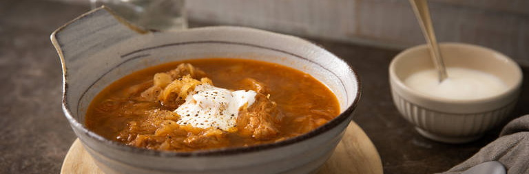

Szegedin Goulash
“A real Hungarian classic and hearty dish. I like to enjoy it with Czech bread dumplings.”
Ingredients
- 250g pork shoulder
- 1⅓ tbsp vegetable oil
- ⅓ tbsp sweet paprika powder
- ⅛ tbsp smoked paprika powder
- 100 g onions
- ⅓ clove garlic
- ⅓ tsp tomato paste
- 33⅓ ml white wine
- 200 ml vegetable broth
- ⅛ tsp caraway seed
- ⅓ bay leaf
- 133⅓ g sauerkraut
- sour cream (for serving)
- salt & pepper
How to prepare the Goulash
Step 1/5
Cut pork shoulder into chunks. Toss with vegetable oil, sweet paprika powder, and smoked paprika powder. Let marinate for at least 2 hrs. in the fridge.
Step 2/5
Peel onions and garlic and chop.
Step 3/5
Sear the pork in batches in a heavy-bottomed pot over high heat. Remove from the pot then add the onion and garlic and fry until transparent. Add tomato paste and fry briefly, then add any remaining meat marinade.
Step 4/5
Put the pork back in the pot with the onions and season with salt and pepper. Deglaze with white wine and vegetable stock. Add caraway seeds and bay leaf, cover, and let simmer for approx. 1 hour.
Step 5/5
Add sauerkraut then let cook approx. 30 min more. Season with salt and pepper. Serve the goulash with a dollop of sour cream. Enjoy!